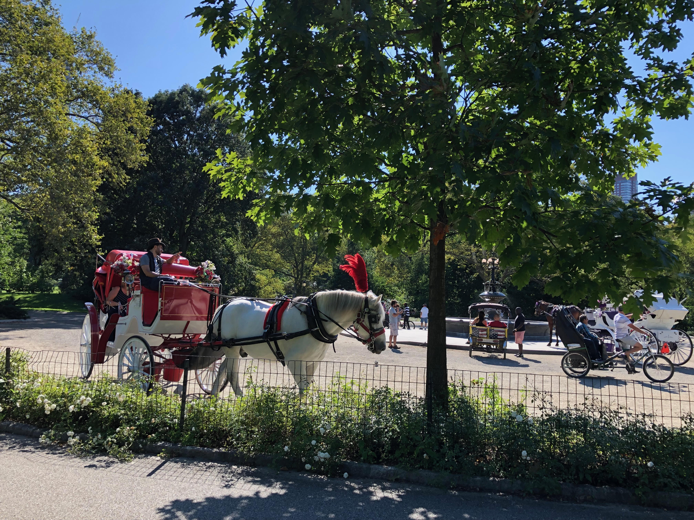
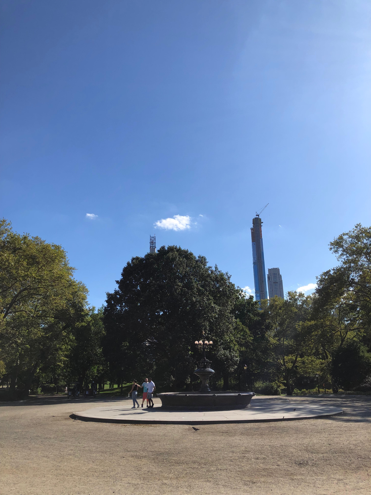
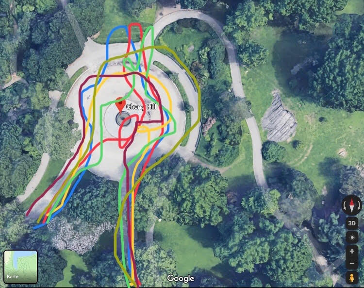
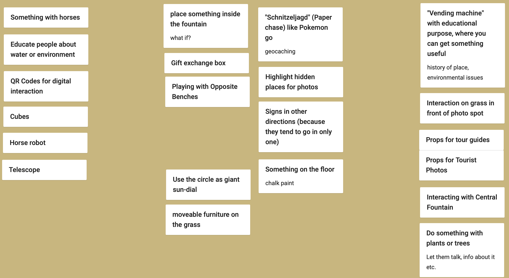
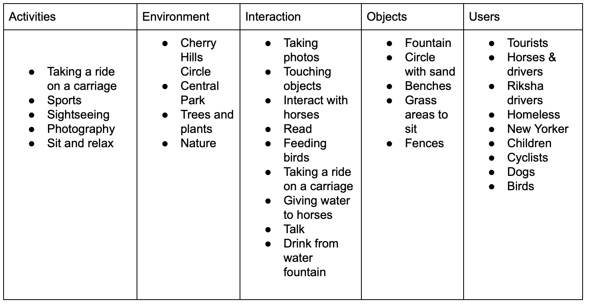
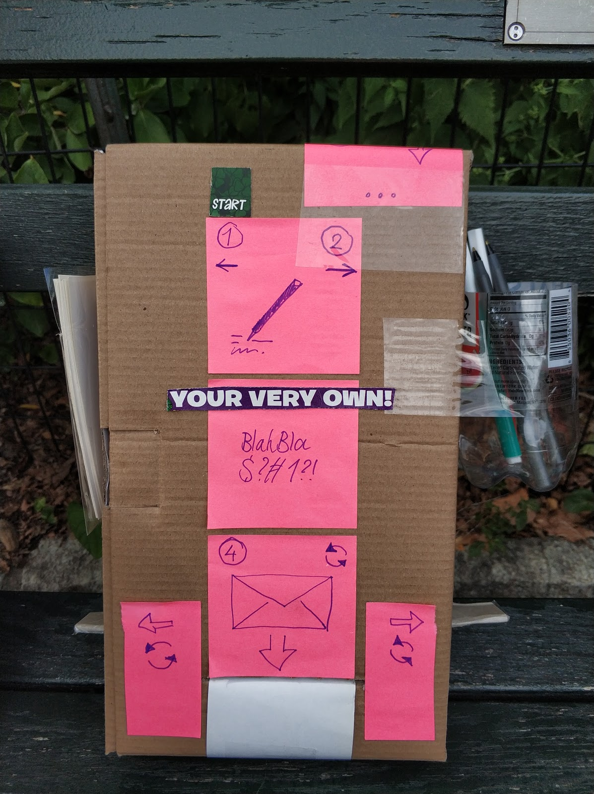
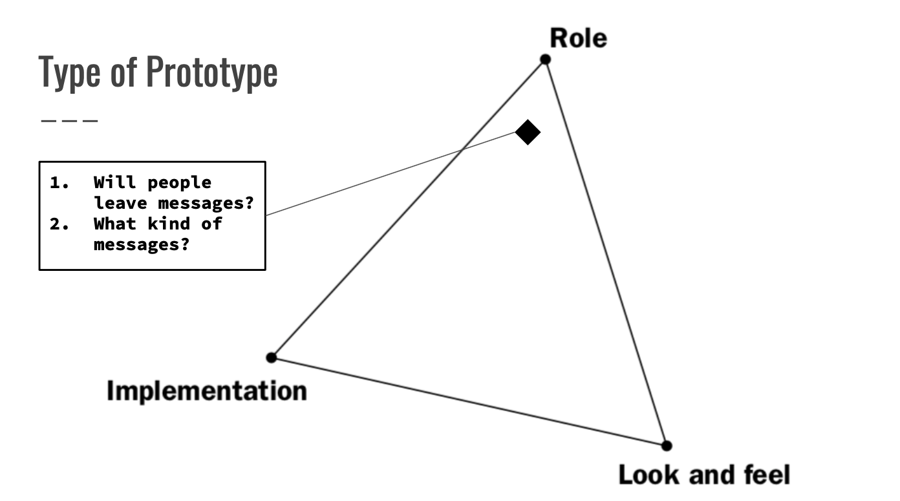

PATRICIA PARNET
Design & Technology: Major Studio One
Instruction sets for strangers with JOE CHUNG // CHERRY HILLS x CENTRAL PARK
PLACE
Cherry Hills is part of New York's famous Central Park and is located on the Upper Western part of the park.
The place is known for its romantic water fountain and for the great photo spots towards the castle.
It had always been a historic location for horse carriages too, because the fountain offers an accessible source of water for horses.
 
MAPPING
As Cherry Hills is a circle, we were interested in the behaviour of visitors, horses, birds and dogs around.
Our target groups are tourists and native New Yorkers.

INSTALLATION x PROTOTYPE I
Ideation is still an ongoing process, but the power of observation and creative methods helped us to come up with a couple of outstanding ideas.


The map gives us a good overview about perfect places for our installation.
TESTING x PROTOTYPES
Ideation is still an ongoing process, but the power of observation and creative methods helped us to come up with a couple of ideas.
Our mission is to show the endless cycle of things, especially trash. We also want people to not only benefit from our concept, but also create somethings themselves.
The prototype I is made out of cardboard and trash. It looks playful and colorful.
People started to observe, touch and explore the box. But it seems like the design needs to improve in order to complete the desired interaction.
Therefore, we decided to implement a mechanism in the second prototype.
The prototype I is made out of cardboard and trash. It looks playful and colorful.
People started to observe, touch and explore the box. But it seems like the design needs to improve visually in order to complete the desired interaction.
The prototype itself conbines the following attributes: We are all connected and We get what we put in (endless cycle)
We added a playful mechanism in order to increase the interaction and tested it in two locations later. The basic ides here was to not only insert someting, but writing a creative message and create something personal. Everything is still build out of trash and we included elemenents for additianl material, like a holder for pens or paper.
The prototype is made out of cardboard and trash. It looks playful and colorful, inviting people to collaborate: We can create what we put in and leave a message to a stranger.




It seems like the second locations attracts more attention and people have more time to sit down and reflect. First, they started pulling out and reading messages, then they started writing their own.
Our task is to guide the interaction in our desired direction: awareness for the environment and trash. Firthermore, we aim to create a general understanding of how to live in a society that works together on environmental goals.
A prototype is an artefact that is continouisl< changing based on user feedback. Therefore, we finalized it in order to gain more confidence to increase the interaction rate through design.
The box was designed from foam board looks like a cube. The intension was to build an object that looks like a post box, which would lead to more interaction due to a familiar look (post box).
People started to notice the box and started converdations, with descriptions such as "cute" or questions like "What's that?".